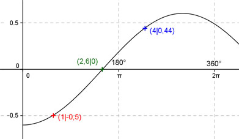

Aufgabe 186 Ergänzen Sie die Wertetabelle für x zwischen 0 und 2π: y = -0,6 cos 0,6x x 4 1 y 0,44 -0,5 Amplitude = 0,6 ; Periode = 2π/0,6 = (10/3)π Berechnung der Nullstellen: -0,6 cos 0,6 x = 0 --> Substitution 0,6x = u --> 0,6 cos u = 0 --> u = k * π/2 mit k = 0, 1, 2, ... --> Rücksubstitution liefert 0,6x = k * π/2 |:0,6 --> x = k * π/1,2 x = π/1,2 = 2,6 gerundet oder 149°.  Funktionswert an einer Stelle x ermitteln: 4 * 180° x = 4 oder ---------- = 229,2° π f(4) = - 0,6 cos (0,6 * 4) = - 0,6 cos (0,6 * 229,2°) = 0,44 gerundet. Berechnung der x-Werte für y = f(x) = -0,5: f(x) = -0,5 eingesetzt, existiert zwischen 0 und π bzw. 0° und 180°. -0,6 cos 0,6x = - 0,5 |:(- 0,6) --> cos 0,6x = 0,833 --> 0,6x = arc cos 0,833 = 0,59 |:0,6 1 * 180° x = 1 oder ---------- = 57,3° gerundet. π